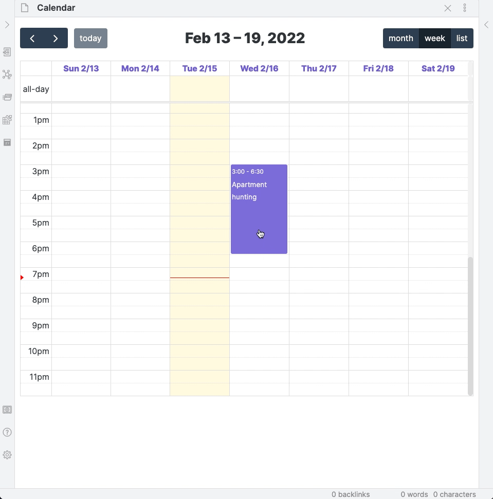

Recurring Events & Overrides¶
The recurring event system in Full Calendar is designed to be both powerful and intuitive, allowing you to manage repeating events without creating dozens of notes.
Creating a Recurring Event¶
- Create a new event or edit an existing one to open the event modal.
- In the Repeats dropdown, select the frequency: Weekly, Monthly, or Yearly.
- Weekly: Choose the specific days of the week the event should repeat on.
- Monthly: The event will repeat on the same day of the month as the start date (e.g., the 15th).
- Yearly: The event will repeat on the same month and day as the start date (e.g., every January 15th).
- Optionally, set a Start Repeat and End Repeat date to define the range of the recurrence.
- Save the event. A single note will be created that represents the entire series.
Daily Notes Limitation
Recurring events are not supported in "Daily Note" calendars. Please use a "Full Note" calendar for recurring events.
Overrides: Editing a Single Instance¶
What if you need to move just one meeting in a series? Or change its title? This is where overrides come in. An override is a standalone, single event that is linked to its parent recurring series.
To create an override, simply drag an instance of a recurring event to a new time or resize it.
The plugin will automatically: 1. Create a new, single-instance event with your changes. 2. Add an exception to the parent series so the original event for that day disappears. 3. Visually, it looks like you just moved one event, but the data is handled cleanly in the background.

Recurring Tasks¶
Tasks in recurring events are now much more useful. You can mark a single instance of a recurring task as complete.
- Check the box: The task for that specific day will be marked as done and crossed out.
- Future instances remain: The task for the next week (or month) will appear as normal, ready to be completed.
- Un-check the box: If you made a mistake, simply un-check the box. This will delete the "completed" override and the original recurring instance will reappear.
Editing and Deleting¶
The plugin provides clear options to ensure you only modify what you intend to.
Editing an Inherited Property¶
If you try to edit an override's title or category in the modal, you'll see that the fields are disabled. This is because these properties are inherited from the parent. Clicking on a disabled field will prompt you:
"This property is inherited from the parent recurring event. Would you like to open the parent to make changes?"
This prevents accidental changes and helps you edit the entire series when you need to.
Note: Some fields on an override intentionally inherit from the parent rule and can't be changed directly on the child.
Deleting a Recurring Event¶
When you delete an event that is part of a recurring series, the plugin will ask you what you want to do.
- Deleting an Override: If you delete a single override you created, it will be removed and the original instance from the parent series will reappear in its place.
- Deleting a Master Event: If you delete the main recurring event (the one that defines the series), you will be presented with a modal with two options:
- Promote Children: This deletes the master recurring rule but converts all of its overrides into standalone events. They will no longer be linked to the series.
- Delete Everything: This deletes the master recurring rule and all of its child overrides. This cannot be undone.
Remote calendars (Google/ICS/CalDAV) respect cancellations and exceptions from the source and propagate them into the view.